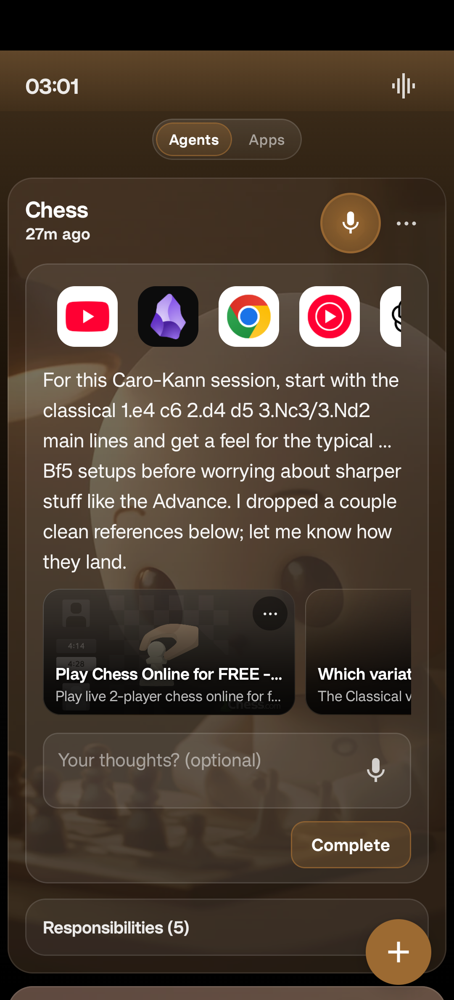

You are trying to close the gap between who you are and who you want to be. But right now, the threads of your life are scattered across a passive grid, pushed and pulled by algorithms while your device just watches. Savyn takes your side. It is an OS fiercely biased toward your life—connecting your context and aligning the glass to exactly where you are going.

M01 // Speak. It reshapes.
Hold the mic. Say "working on my Caro-Kann". Chess opens with the right lines, the right videos, the right next move — already loaded. You didn't open an app. You didn't write a prompt. You spoke once.
Frame 01 // Chess agent · live
A real ping from a real agent — specific opening lines, the exact references, the apps you'd reach for, all in one breath. Not a notification. A next move.
M02 // Five agents. One you.
Music. Chess. Mornings. Eating. The way you think. Each agent holds the thread of one part of your life — so you never start from zero, and no idea you have ever dies alone in a notes app.
M03 // Trajectories, not folders.
Your Caro-Kann opening. Your sub-4 5K. Your one black coffee before noon. Savyn watches each arc with you, names it, and stacks every moment you forge into its spine. You operate. It remembers.
Frame 02 // A responsibility, alive
One tap on Complete stacks the moment into the arc. Days later, the agent comes back with the next continuation — written specifically for the arc you're on.
M04 // The next move. Not a notification.
"Try the …Bf5 setup against the Advance — here's a 4-minute breakdown." Specific. Linked. Forward-moving. Drawn from every moment you've put into the arc — never a generic nudge from a streak engine.
M05 // Mass, not metrics.
Just the chronological mass of moments you forged — stacked, dated, undeniable. The shape of who you're becoming, kept faithfully and never gamified.
03 // The flow
One tap, one sentence. Savyn parses raw intent in milliseconds — no menus, no app drawer, no prompt-engineering yourself.
Change tracks and the phone changes shape — apps, widgets, links, all materialized for the state you're actually in.
Every moment slots into the right arc. The agent hands your best concepts back to you when the context returns.
All storage on device. AI calls are anonymous, routed through secure proxies. Read the privacy policy.
Closing // Savyn Labs
Android closed alpha. Limited seats. No marketing — only sequence updates.
— Rohith, founder, Savyn Labs
04 // Writings